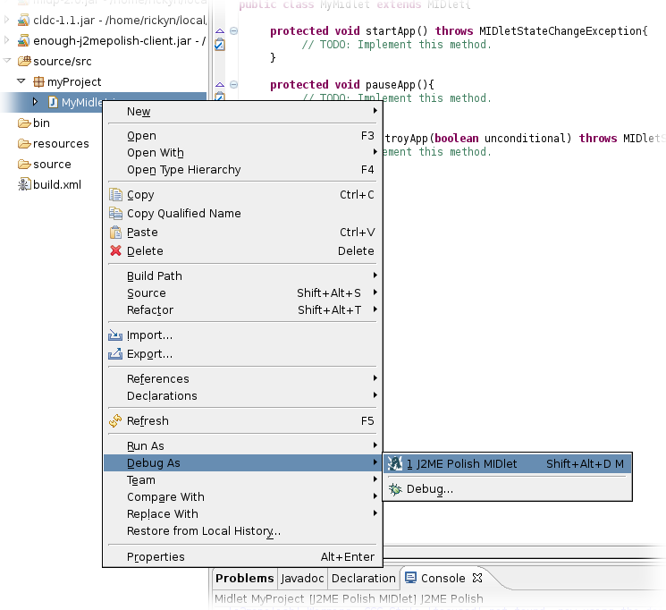

You can run and debug your MIDlets just by right-clicking your project and choose "Debug As.../J2ME Polish MIDlet" or "Run As.../J2ME Polish MIDlet".
Open a midlet with the J2ME Polish Editor.

Choose a target device with the drop down box in the upper right hand side.

Set breakpoints in the code. (v0.7.x: left-clicking the margin does not work. Use right-click and "Toogle Breakpoint" instead.)

Choose "Debug As.../J2ME Polish MIDlet". In case you just want to launch the emulator, choose "Run As.../J2ME Polish MIDlet".
The emulator is now starting up and the debugger is connected. If the running midlet hits the breakpoint the source in question is displayed.
Happy debugging!
In case you have trouble with the debugging, please check your debugging preferences in Eclipse (Window > Preferences).
Go to the "Debug" panel and uncheck the item "Suspend execution on uncaugt exceptions".
 <%include end.txt %>
<%include end.txt %>